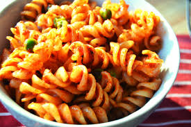
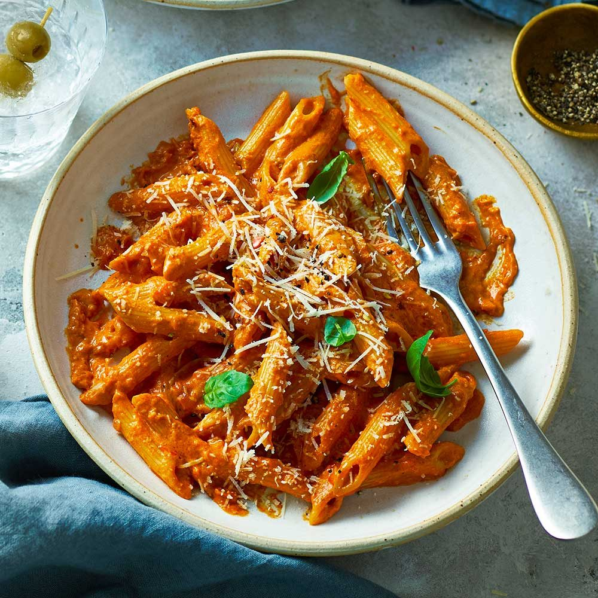
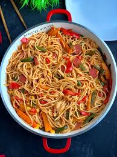
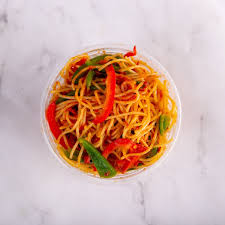
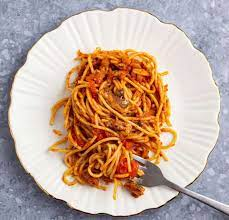
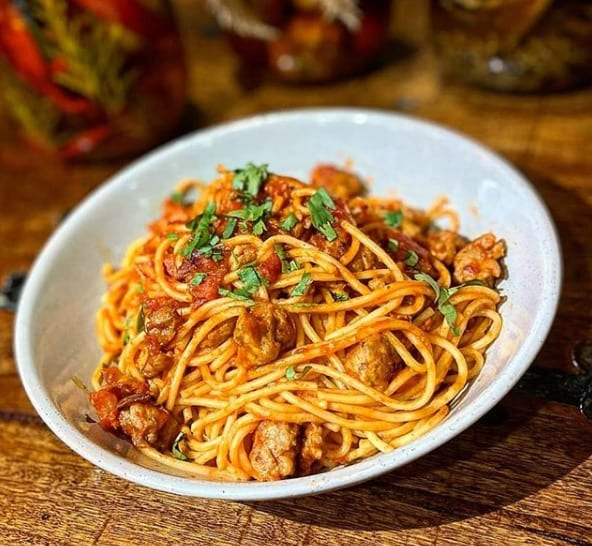

Meal is served
Pasta gallery




Spagetti gallery




is a type of food typically made from an unleavened dough of wheat flour
mixed with water or eggs, and formed into sheets or other shapes, then
cooked by boiling or baking.
Rice flour, or legumes such as beans or lentils, are sometimes used in
place of wheat flour to yield a different taste and texture, or as a
gluten-free alternative. Pasta is a staple
food of Italian cuisine.
Archaeologists believe that central Asia is most likely the first area
to have produced noodles thousands of years ago. From Asia, it traveled
westward. The way it reached Europe
is unclear, though there are many theoriessome believe that nomadic
Arabs are responsible for bringing early forms of pasta westward. Once
it reached the Mediterranean the
process was refined, and durum wheat became the ingredient of choice for
pasta flour because of its high gluten content and long shelf life. When
durum wheat pasta is dried, it
lasts indefinitely, making it a very convenient food to store. Over
time, because of pastas affordability, shelf life, and versatility, it
became firmly rooted in Italian culture. The
warm Mediterranean climate of Italy is suited to growing fresh
vegetables and herbs, which meant that Italians could get creative with
a delicious variety of pasta sauces. Early
Spanish settlers were among the first to bring pasta to America. Believe
it or not, it was Thomas Jefferson that helped give pasta an initial
push into popularity. During an extended
stay in Paris from 1784-1789, Jefferson ate what he called macaroni back
then, the word could have referred to any shape of pasta. He enjoyed the
dish so much that he returned to
America with two cases in tow. When his supply ran out, he sent for
reinforcements via a friend from Naples.
Angels hair, Bucatini, Spaghetti, Linguine, Pappardelle, Cavatappi, Fusilli Rotini see more
If you are watching your cholesterol levels, pasta is perfect for you,
being very low in sodium and cholesterol free. Per cup, enriched
varieties of pasta provide a good sources of
several essential nutrients, including iron and B-vitamins.
Enriched pasta is fortified with folic-acid essential for women of
child-bearing age. A serving of dry pasta supplies the equivalent of
roughly 100 micrograms of folic acid, or 25%
of the recommended daily intake.
Carbohydrates like pasta provide glucose, the crucial fuel for your
brain and muscles. And because pasta is an awesome source of complex
carbohydrates (unlike those of the refined
and processed variety), releasing energy at a slow and sustained level,
you do not get the energy spikes associated with simple sugars.
Pasta is part of a well-balanced diet, with current Australian
Government guidelines suggesting 35% of our daily calories intake should
come from complex carbohydrates such as pasta.
Combine pasta with lean protein and vegetables for a complete meal that
puts you well on the path to hitting those dietary goals!
Spaghetti is a long, thin, solid, cylindrical pasta. It is a staple food
of traditional Italian cuisine. Like other pasta, spaghetti is made of
milled wheat and water and sometimes enriched
with vitamins and minerals. Italian spaghetti is typically made from
durum wheat semolina. Usually the pasta is white because refined flour
is used, but whole wheat flour may be added.
Spaghettoni is a thicker form of spaghetti, while capellini is a very
thin spaghetti. Originally, spaghetti was notably long, but shorter
lengths gained in popularity during the latter half of
the 20th century and now it is most commonly available in 25 to 30 cm
lengths. A variety of pasta dishes are based on it and it is frequently
served with tomato sauce or meat or vegetables.
|
|
|---|---|
|
|
|
|
|
|
|
|
|
|
|
|
|
|
|
|
|
|
|
|
|
|
|
|
|
|